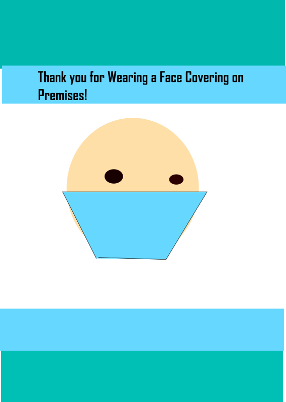

Drawn with inkscape
I first Created the shapes layer including the circle for the face and the eyes. I then drew the mask with the path's tool. I created pattern with 4 different colored rectangles and layered the text above it.
Copyright Abby Ruffier 2020, For Educational purposes only